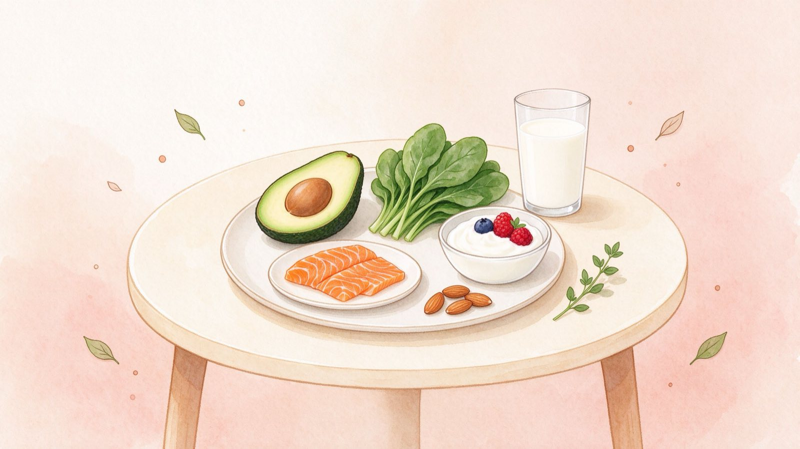

Key nutrients to prioritize Every trimester
Your body uses more of certain nutrients while pregnant. A prenatal vitamin covers the basics, but real food does the heavy lifting.
Build your plate with
- Folate / folic acid — leafy greens, beans, fortified grains.
- Iron — lean meat, lentils, spinach, with vitamin C.
- Calcium — dairy, tofu, fortified plant milks.
- Protein & healthy fats — eggs, fish, nuts, avocados.
Why they matter
- Folate supports early brain and spine development.
- Iron helps carry oxygen and prevents fatigue.
- Calcium builds your baby's bones and teeth.
- Omega-3 (DHA) supports brain and eye development.
Foods to limit or avoid Safety first
A few foods carry real risks in pregnancy. Keep it simple with these clear rules.
Avoid
- Alcohol — the safest amount is none.
- Raw or undercooked meat, eggs and fish.
- Unpasteurized milk and soft cheeses.
- High-mercury fish: shark, swordfish, king mackerel.
Limit
- Caffeine to about 200 mg a day (roughly one small coffee).
- Salty, highly processed foods.
- Raw sprouts and large amounts of liver.
- Ask about deli meats — some prefer heating them.
Trimesters at a glance How to eat
Your needs barely change early on and rise modestly later. Quality beats quantity at every stage.
First trimester
- Focus on folic acid and eating what you can keep down.
- Small, frequent meals if nausea hits.
- Stay hydrated; you don't need extra calories yet.
Second & third trimester
- Add roughly 340 (2nd) then 450 (3rd) extra calories a day.
- Prioritize protein, iron, calcium and DHA.
- Drink plenty of water and keep fibre up.
Talk to your care team if
- You're not gaining weight as expected for your stage.
- You're worried about a food you've already eaten.
- You have cravings for non-food items (pica).
- You have an existing condition, like diabetes or a dietary restriction.
Common questions
What foods should I avoid during pregnancy?▾
Avoid alcohol, raw or undercooked meat and eggs, raw fish, unpasteurized dairy, and high-mercury fish such as shark, swordfish and king mackerel. Limit caffeine to about 200 mg a day.
Which nutrients are most important in pregnancy?▾
Folate (folic acid), iron, calcium, vitamin D, protein and omega-3 (DHA) are especially important. Most care teams recommend a prenatal vitamin to cover the basics.
Do I need to eat more during pregnancy?▾
You typically need only a little extra — roughly 340 extra calories in the second trimester and about 450 in the third. Quality matters more than quantity.
This guide is for general information and is not medical advice. Individual needs vary — always follow your doctor, midwife or dietitian's guidance.